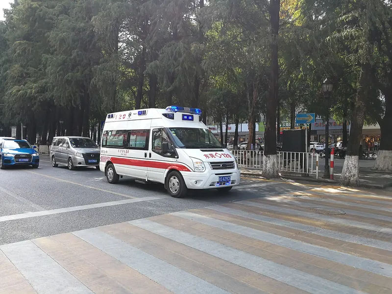

01 · 现场分诊Field triage
把对的病人送到对的医院Get the right patient to the right hospital
重伤员越早到达有确定性止血能力的医院越好。现场分诊决定救治链的起点。The sooner a severely injured patient reaches a hospital that can stop bleeding, the better. Field triage sets the chain’s start.
不能听从指令；呼吸 <10 或 >29 次/分；成人收缩压 <90 mmHg；头颈躯干穿透伤；怀疑骨盆骨折；需止血带或填塞的出血。Cannot follow commands; RR <10 or >29; adult SBP <90 mmHg; penetrating head/neck/torso; suspected pelvic fracture; bleeding needing tourniquet or packing.
直接送往有能力处理的创伤中心；国内参照各地创伤中心分级与 120 调度。Directly to a capable trauma centre; in China follow regional trauma-centre levels and 120 dispatch.
目标是缩短“受伤到止血”的时间，而不只是“到医院”的时间。Minimise injury-to-haemorrhage-control time, not just time to hospital.
欧洲指南推荐：重伤员直接转运至合适的创伤机构（1B），并尽量缩短受伤至出血控制的时间（1B）。European guideline: transport severely injured patients directly to an appropriate trauma facility (1B) and minimise time to bleeding control (1B).
European guideline 6th ed. (2023) R1 · ACS COT Field Triage (2021)展开：指南原文要点与教学提示Expand: guideline points and teaching notes
国内：国家卫生健康委 2018 年《关于进一步提升创伤救治能力的通知》推动建立分级创伤中心和区域救治网络。China: the 2018 National Health Commission notice on improving trauma care capacity set up tiered trauma centres and regional networks.